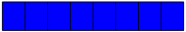
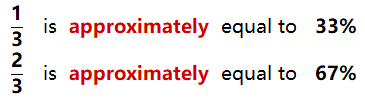
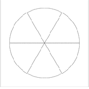
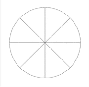

Subsection 2.2.1 Percents
A percent is a fraction. For example,
\begin{equation*}
75\% = 0.75 = \dfrac{75}{100}
\end{equation*}
"Percent" means "for each 100" or "out of 100." So a percent is just a fraction whose denominator is 100. If you understand hundredths, you also understand percents!
Example 2.2.1.
Jaycee is an interior designer and takes a 10% commission on the cost of a remodel. A recent remodel cost $12,500. How much is Jaycee's commission?
Solution.
10% means "ten out of 100" or \(\dfrac{10}{100}\text{,}\) and \(\dfrac{10}{100}\) reduces to \(\dfrac{1}{10}\text{.}\) To find \(\dfrac{1}{10}\) of 12,500, we divide by 10:
\begin{equation*}
\dfrac{1}{10}~ \text{of}~ 12,500 = 12,500 \div 10 = 1250
\end{equation*}
Jaycee's commission is $1250.
Because 10% is equal to \(\dfrac{1}{10},~\) it is easy to find 10% of a number: we just divide the number by 10. Once we know 10% of a number, we can find other percents. For example, to find 20% of a number we can compute 10% of the number and then double the result.
Checkpoint 2.2.2.
Viktor used a coupon for 10% off the price of hiking boots and saved $12.00. Find the following percents of the price of the boots.
Answer.
$6
$24
$30
$1.20
$3.60
$120
Activity 2.2.1. Percents.
Follow the steps to find each percent. Try to do the calculations in your head!
-
The Kwans are buying a house for $340,000, and they want to make a down payment of 20% of the price.
What is 10% of the price of the house?
What is 20% of the price of the house?
-
The restaurant bill came to $26, and Tyrell wants to leave a 15% tip.
What is 10% of the bill?
What is 5% of the bill?
What is 15% of the bill?
-
The sales tax on a $25 rose bush is 8%.
What is 10% of the price of the rose bush?
What is 1% of the price of the rose bush?
What is 8% of the price of the rose bush?
-
In 2020 there were approximately 72 million children under the age of 18 in the United States. About 16% of them lived in poverty.
What was 10% of the US population of children?
What was 5% of the US population of children?
What was 1% of the US population of children?
What was 16% of the US population of children?
Subsection 2.2.2 Calculating Percents
Because "percent" means "per 100," we can change a percent to a decimal fraction by dividing it by 100. You can use your calculator, or, even better, you can remember that to divide by 100 we move the decimal point 2 places to the left.
Example 2.2.3.
Change 12% to a decimal fraction.
Solution.
12% means twelve hundredths, so we divide 12 by 100. We move the decimal point 2 places to the left.
We see that 12% is equal to 0.12.
To change a percent to a decimal fraction:.
Divide the percent by 100,
\begin{equation*}
\text{or}
\end{equation*}
Move the decimal point two places to the left.
Even Easier! You can also think of the % sign as "hundredths," so that we read 12% as "twelve hundredths" and write the fraction 0.12.
Checkpoint 2.2.4.
Change each percent to a decimal fraction.
50%
5% (Be careful!)
23%
99%
12.5%
200%
Answer.
0.5
0.05
0.23
0.99
0.125
2.00
Now we can find any percent of a number.
Example 2.2.6.
The sales tax in Florida is 6%. What is the sales tax on a TV that costs $458?
Solution.
We'd like to find 6% of $458. We must first change 6% to a decimal fraction by moving the decimal point 2 places to the left.
\begin{equation*}
6\% = 0.06
\end{equation*}
(Note that we inserted a zero in front of 6 so that we could move the decimal point 2 places to the left!)
Next, we multiply 0.06 times 458.
\begin{equation*}
0.06 \times 458 = 27.48
\end{equation*}
The sales tax is $27.48.
To calculate a percent of a number.
Change the percent to a decimal fraction.
Multiply the number by the decimal fraction.
Checkpoint 2.2.8.
Calculate the sales tax.
| Indiana |
7% |
\(\hphantom{000000}\) |
$15 |
\(\hphantom{0000000000}\) |
| Oklahoma |
11% |
\(\hphantom{000000}\) |
$120 |
\(\hphantom{0000000000}\) |
| Washington |
9.6% |
\(\hphantom{000000}\) |
$80 |
\(\hphantom{0000000000}\) |
| Texas |
8.25% |
\(\hphantom{000000}\) |
$300 |
\(\hphantom{0000000000}\) |
Answer.
| Indiana |
7% |
0.07 |
$15 |
$1.05 |
| Oklahoma |
11% |
0.11 |
$120 |
$13.20 |
| Washington |
9.6% |
0.096 |
$80 |
$7.68 |
| Texas |
8.25% |
0.0825 |
$300 |
$24.75 |
Subsection 2.2.4 Eighths
We have studied the benchmark fractions \(\dfrac{1}{4},~~\dfrac{1}{2},~~\) and \(~\dfrac{3}{4},~~\) as well as tenths and hundredths. Along the way we also encountered fifths. Here is another familiar and useful fraction.
Example 2.2.11.
Nelson bought a quarter-pound of sliced roast beef and ate half of it for lunch. How many ounces of roast beef did he eat? What fraction of a pound is that?
Solution.
There are 16 ounces in a pound, so a quarter-pound is
\begin{equation*}
\dfrac{1}{4}~ \text{of}~ 16 = 16 \div 4 = 4 ~~\text{ounces}
\end{equation*}
Half of 4 ounces is 2 ounces, so Nelson ate 2 ounces of roast beef. As a fraction of a pound, 2 ounces is
\begin{equation*}
\dfrac{\text{part}}{\text{whole}} = \dfrac{2}{16} = \dfrac{1}{8}~~~~~~\blert{\text{Reduce: divide top and bottom by 2.}}
\end{equation*}
Two ounces is \(\dfrac{1}{8}\) lb, or one-eighth of a pound.
Checkpoint 2.2.13.
Find the decimal and percent equivalents for each eighth. Then shade the corresponding fraction of the figure.
| \(\dfrac{1}{8}\) |
\(\hphantom{0000000000}\) |
\(\hphantom{0000000000}\) |
|
| \(\dfrac{2}{8}\) |
\(\hphantom{0000000000}\) |
\(\hphantom{0000000000}\) |
|
| \(\dfrac{3}{8}\) |
\(\hphantom{0000000000}\) |
\(\hphantom{0000000000}\) |
|
| \(\dfrac{4}{8}\) |
\(\hphantom{0000000000}\) |
\(\hphantom{0000000000}\) |
|
| \(\dfrac{5}{8}\) |
\(\hphantom{0000000000}\) |
\(\hphantom{0000000000}\) |
|
| \(\dfrac{6}{8}\) |
\(\hphantom{0000000000}\) |
\(\hphantom{0000000000}\) |
|
| \(\dfrac{7}{8}\) |
\(\hphantom{0000000000}\) |
\(\hphantom{0000000000}\) |
|
| \(\dfrac{8}{8}\) |
\(\hphantom{0000000000}\) |
\(\hphantom{0000000000}\) |
|
Answer.
| \(\dfrac{1}{8}\) |
0.125 |
12.5% |
|
| \(\dfrac{2}{8}\) |
0.25 |
25% |
|
| \(\dfrac{3}{8}\) |
0.375 |
37.5% |
|
| \(\dfrac{4}{8}\) |
0.5 |
50% |
|
| \(\dfrac{5}{8}\) |
0.625 |
62.5% |
|
| \(\dfrac{6}{8}\) |
0.75 |
75% |
|
| \(\dfrac{7}{8}\) |
0.875 |
87.5% |
|
| \(\dfrac{8}{8}\) |
1 |
100% |
 |
Converting between fractions and percents can simplify many calculations.
Example 2.2.14.
Devon and Darla Grant together make $3200 per month in take-home pay. They are looking for an apartment, and don't want to spend more than 37.5% of their income on housing. What is the maximum rent they can afford?
Solution.
We'll solve this problem in two different ways. First, we'll compute 37.5% of $3200. We write the percent as a decimal fraction and use a calculator to multiply:
\begin{equation*}
0.375 \times 3200 = 1200
\end{equation*}
The Grants can afford $1200 monthly rent.
We can compute the fraction without a calculator if we remember that 37.5% is the same as \(\dfrac{3}{8}\text{.}\) We first find \(\dfrac{1}{8}\) of $3200 by dividing by 8:
\begin{equation*}
3200 \div 8 = 400
\end{equation*}
Then we multiply by 3 to find \(\dfrac{3}{8}\) of 3200:
\begin{equation*}
3 \times 400 = 1200
\end{equation*}
We get the same answer, and we can do the calculations mentally!
Checkpoint 2.2.15.
Devon and Darla from the previous Example have budgeted their $3200 monthly income as follows.
| Housing |
37.5% |
\(\hphantom{0000000000}\) |
\(\hphantom{0000000000}\) |
| Food and Clothing |
25% |
\(\hphantom{0000000000}\) |
\(\hphantom{0000000000}\) |
| Auto and Insurance |
12.5% |
\(\hphantom{0000000000}\) |
\(\hphantom{0000000000}\) |
| Entertainment |
15% |
\(\hphantom{0000000000}\) |
\(\hphantom{0000000000}\) |
| Savings |
10% |
\(\hphantom{0000000000}\) |
\(\hphantom{0000000000}\) |
| Total |
\(\hphantom{0000000000}\) |
\(\hphantom{0000000000}\) |
\(\hphantom{0000000000}\) |
Compute the amount they can spend in each category. Try to do each calculation in your head, by using fractions whenever possible!
Check your calculations by computing the total in each column.
Answer.
| Housing |
37.5% |
\(\dfrac{3}{8}\) |
$1200 |
| Food and Clothing |
25% |
\(\dfrac{1}{4}\) |
$800 |
| Auto and Insurance |
12.5% |
\(\dfrac{1}{8}\) |
$400 |
| Entertainment |
15% |
\(\dfrac{3}{20}\) |
$480 |
| Savings |
10% |
\(\dfrac{1}{10}\) |
$320 |
| Total |
100% |
1 |
$3200 |
Subsection 2.2.6 Decimal Form of One-Third
What about the decimal form of
\(\dfrac{1}{3}\text{?}\) Remember that some fractions do not "come out evenly" in their decimal form. One-third is one of those fractions. Use your calculator to verify that
where the … symbol indicates that the 3's go on forever. (Recall that we encountered repeating decimals in Section 2.1. We can represent
\(\dfrac{1}{3}\) with a repeater bar as
\(0.\overline{3}.~~\)) This is the exact value of
\(\dfrac{1}{3}\) as a decimal fraction. We often round the decimal form to hundredths and say that
Similarly, you can verify that the exact value of
\(\dfrac{2}{3}\) is
or
\(0.\overline{6},~~\) and by rounding to hundredths we see that
From here we can say that

Can we write exact percent values for \(\dfrac{1}{3}\) and \(\dfrac{2}{3}\text{?}\) Try the following calculation:
To write \(\dfrac{1}{3}\) as a percent: divide 100 by 3 by hand (that is, without a calculator!). You should find that
\begin{equation*}
100 \div 3 = 33\dfrac{1}{3}
\end{equation*}
If we double this number we find the percent form of \(\dfrac{1}{3}\text{:}\)
\begin{equation*}
2 \times 33\dfrac{1}{3} = 66\dfrac{2}{3}
\end{equation*}
We have found exact percent forms for \(\dfrac{1}{3}\) and \(\dfrac{2}{3}\text{.}\)
Thirds as Percents.
\begin{equation*}
\dfrac{1}{3} = 33\dfrac{1}{3} \% \hphantom{0000000000} \text{and} \hphantom{0000000000} \dfrac{2}{3} = 66\dfrac{2}{3} \%
\end{equation*}
Activity 2.2.3. Percents as Fractions.
Complete the table by entering the (reduced) common fraction equivalent to each percent, and then computing that fraction of 120.
Try to do all of your work without a calculator. Remember that once you know the benchmark fractions of an amount, you can use those to find other fractions of the same amount.
| 1 |
\(\hphantom{0000000000}\) |
\(\hphantom{0000000000}\) |
| 5 |
\(\hphantom{0000000000}\) |
\(\hphantom{0000000000}\) |
| 10 |
\(\hphantom{0000000000}\) |
\(\hphantom{0000000000}\) |
| 12.5 |
\(\hphantom{0000000000}\) |
\(\hphantom{0000000000}\) |
| 20 |
\(\hphantom{0000000000}\) |
\(\hphantom{0000000000}\) |
| 25 |
\(\hphantom{0000000000}\) |
\(\hphantom{0000000000}\) |
| 30 |
\(\hphantom{0000000000}\) |
\(\hphantom{0000000000}\) |
| 33\(\frac{1}{3}\)
|
\(\hphantom{0000000000}\) |
\(\hphantom{0000000000}\) |
| 37.5 |
\(\hphantom{0000000000}\) |
\(\hphantom{0000000000}\) |
| 40 |
\(\hphantom{0000000000}\) |
\(\hphantom{0000000000}\) |
| 50 |
\(\hphantom{0000000000}\) |
\(\hphantom{0000000000}\) |
| 60 |
\(\hphantom{0000000000}\) |
\(\hphantom{0000000000}\) |
| 62.5 |
\(\hphantom{0000000000}\) |
\(\hphantom{0000000000}\) |
| 66\(\frac{2}{3}\)
|
\(\hphantom{0000000000}\) |
\(\hphantom{0000000000}\) |
| 70 |
\(\hphantom{0000000000}\) |
\(\hphantom{0000000000}\) |
| 75 |
\(\hphantom{0000000000}\) |
\(\hphantom{0000000000}\) |
| 80 |
\(\hphantom{0000000000}\) |
\(\hphantom{0000000000}\) |
| 87.5 |
\(\hphantom{0000000000}\) |
\(\hphantom{0000000000}\) |
| 90 |
\(\hphantom{0000000000}\) |
\(\hphantom{0000000000}\) |
| 95 |
\(\hphantom{0000000000}\) |
\(\hphantom{0000000000}\) |
| 99 |
\(\hphantom{0000000000}\) |
\(\hphantom{0000000000}\) |
| 100 |
\(\hphantom{0000000000}\) |
\(\hphantom{0000000000}\) |
Exercises 2.2.7 Practice 2.2
1.
List several different ways to find 10% of a number.
2.
If you know 10% of a number, how can you find the number?
3.
If you know 10% of a number, how can you find 5% of the number?
How can you find 25% of the number?
Leslie gave $76 to a local charity. That was 10% of her paycheck. Find 25% of her paycheck, using the method you described in parts (a) and (b).
4.
If you know 10% of a number, how can you find 1% of the number?
How can you find 99% of the number?
The Wellness Clinic gave flu shots to 170 seniors last week. That was 10% of the seniors living in Stratton County. Find 99% of the senior population, using the method you described in parts (a) and (b).
5.
Delbert says that to find 4% of a number, we multiply the number by 0.4. Is he correct? Why or why not?
6.
Francine says that we can omit the zero after the 8 in the fraction 0.80, but we cannot omit the zero before the 8 in 0.08. Is she correct? Why or why not?
7.
Moving the decimal point 2 places to the left is a short-cut for what operation?
8.
Which of the following operations does 38 represent?
3 divided into 8
3 divided by 8
\(\displaystyle 3 \div 8\)
\(\displaystyle 8 \div 3\)
9.
Describe a way to find 0.625 of $6400 without using a calculator.
10.
One of the numbers below is not equal to any of the others. Which is it? Sort the rest of the numbers into three groups of equal numbers.
\begin{equation*}
0.3 \hphantom{00} 3\% \hphantom{00} 3.0 \hphantom{00} \dfrac{3}{100} \hphantom{00} 0.03 \hphantom{00} \dfrac{30}{100} \hphantom{00} 30\% \hphantom{00} \dfrac{1}{3} \hphantom{00} 0.30 \hphantom{00} \dfrac{30}{10} \hphantom{00} 300\% \hphantom{00} \dfrac{3}{10} \hphantom{00} 3.00
\end{equation*}
11.
Which is a larger fraction, \(\dfrac{3}{8}\) or \(\dfrac{1}{3}\text{?}\)
Is \(\dfrac{1}{9}\) larger or smaller than 10%?
12.
Is \(\dfrac{1}{3}\) equal to 0.3? Try these calculations.
Find \(\dfrac{1}{3}\) of $120 by dividing by 3.
Find \(\dfrac{3}{10}\) of $120 by dividing by 10, then multiplying the result by 3.
Use your calculator to find 0.3 of $120.
Use your calculator to find 0.33 of $120.
Which is a larger fraction, \(\dfrac{1}{3}\) or 310?
13.
Find the percent form of each fraction by dividing the denominator into 10
\(\displaystyle \dfrac{1}{5}\)
\(\displaystyle \dfrac{1}{25}\)
\(\displaystyle \dfrac{1}{8}\)
\(\displaystyle \dfrac{1}{16}\)
14.
Write exact decimal and percent forms for \(\dfrac{1}{6}\) and \(\dfrac{1}{12}\) as follows. (Hint: Do you remember the decimal forms for \(\dfrac{1}{3}\) and \(\dfrac{2}{3}\text{?}\))
Start with the decimal form for \(\dfrac{1}{3}\) and divide by 2.
Divide each denominator into 100.
Do you get the same results by each method?
15.
On Lincoln's birthday, Abe's Furniture Store offered 12% off some basic items. Complete the table showing Abe's discounted prices.
| Sofa |
$480 |
\(\hphantom{0000000000}\) |
\(\hphantom{0000000000}\) |
| Dining Table |
$625 |
\(\hphantom{0000000000}\) |
\(\hphantom{0000000000}\) |
| Dresser |
$390 |
\(\hphantom{0000000000}\) |
\(\hphantom{0000000000}\) |
| TV Stand |
$238 |
\(\hphantom{0000000000}\) |
\(\hphantom{0000000000}\) |
16.
Calculate the percent change in price for each item over the past decade.
| Dozen eggs |
$1.31 |
$1.95 |
\(\hphantom{0000000000}\) |
\(\hphantom{0000000000}\) |
| Pound of Bananas |
$0.50 |
$0.61 |
\(\hphantom{0000000000}\) |
\(\hphantom{0000000000}\) |
| Loaf of Bread |
$0.98 |
$1.40 |
\(\hphantom{0000000000}\) |
\(\hphantom{0000000000}\) |
| Quart of milk |
$2.04 |
$3.70 |
\(\hphantom{0000000000}\) |
\(\hphantom{0000000000}\) |
17.
The Bradleys bought a new home for $760,000 and made a down payment of 15%. What is the amount of their mortgage loan?
18.
Simon made a 20% down payment of $8400 on a new hybrid car. What was the cost of the car?
19.
Cliff answered 24 questions correctly on his quiz and got a score of 80%. How many questions were on the quiz?
20.
Cadbury recently reduced the weight of its most popular chocolate bar from 250 grams to 200 grams. What percent of its original weight was that reduction?
21.
In the first half of 2013, there were 258,915 guns sold in Virginia. In the first half of 2014, there were 192,585 guns sold.
What was the decrease in the number of guns sold?
What percent decrease did guns sales experience over 2013?
22.
At the census of 2010, the population of the U.S. was 308,745,000. In 2020, the population was 331,449,000.
What was the increase in population over that decade?
By what percent of the 2010 population did the population increase from 2010 to 2020?
If the population continues to increase by the same percent, what will the U.S. population be in 2030?
Exercise Group.
For Problems 23-26, decide which discount results in a lower price.
23.
A dress: 40% off $80, or \(\dfrac{1}{4}\) off $60
24.
Hiking shoes: \(\dfrac{1}{5}\) off $110, or 25% off $120
25.
Oatmeal soap: \(\dfrac{1}{3}\) off $6, or 30% off $6
26.
Bathing suit: 60% off $50, or \(\dfrac{2}{3}\) off $60
27.
Which of the following are correct ways to find 5% of an amount?
Divide by 10, then divide by 2.
Multiply by 0.5
Move the decimal two places to the left, then multiply by 5
Divide by 20
Multiply by 100, then divide by 5
28.
Which of these are the same?
1% of $10,000
10% of $1000
0.01 of $1000
\(\dfrac{1}{100}\) of $10,000
10% of $10,000
29.
Allison is planning a birthday party for her daughter. She has a budget of $68 to spend according to the circle graph shown at left below. How much can she spend in each category?
30.
Robert divides his school days as shown in the circle graph shown above at right. How many hours does he spend on each activity?
Exercise Group.
For Problems 31-36, what fraction of the rectangle is shaded? Then reduce the fraction.
Exercise Group.
For Problems 37-46, convert the percent to a fraction, and reduce.
37.
80%
38.
60%
39.
45%
40.
85%
41.
24%
42.
72%
43.
38%
44.
74%
45.
96%
46.
8%
Exercise Group.
For Problems 47-52, find three fractions equivalent to the given fraction.
47.
\(\dfrac{2}{3}\)
48.
\(\dfrac{3}{8}\)
49.
\(\dfrac{1}{6}\)
50.
\(\dfrac{5}{6}\)
51.
\(\dfrac{5}{16}\)
52.
\(\dfrac{1}{8}\)
53.
Fabric is usually sold by the yard, and a yard is equal to 36 inches. The number line below represents one yard.
On the number line, label each benchmark fraction of one yard with its measure in inches.
-
Here is another copy of the one-yard number line. Mark the eighths of a yard on the number line, and label each with its measure in inches.
Use your answers to parts (a) and (b) to complete the table.
| \(\dfrac{1}{8}\) |
\(\hphantom{0000000000}\) |
\(\hphantom{0000000000}\) |
| \(\dfrac{2}{8}\) |
\(\hphantom{0000000000}\) |
\(\hphantom{0000000000}\) |
| \(\dfrac{3}{8}\) |
\(\hphantom{0000000000}\) |
\(\hphantom{0000000000}\) |
| \(\dfrac{4}{8}\) |
\(\hphantom{0000000000}\) |
\(\hphantom{0000000000}\) |
| \(\dfrac{5}{8}\) |
\(\hphantom{0000000000}\) |
\(\hphantom{0000000000}\) |
| \(\dfrac{6}{8}\) |
\(\hphantom{0000000000}\) |
\(\hphantom{0000000000}\) |
| \(\dfrac{7}{8}\) |
\(\hphantom{0000000000}\) |
\(\hphantom{0000000000}\) |
| \(\dfrac{8}{8}\) |
\(\hphantom{0000000000}\) |
\(\hphantom{0000000000}\) |
54.
Each of the lengths in the table below is greater than one yard. Write each length as one yard plus a fraction of a yard.
| 54 |
\(\hphantom{0000000000}\) |
| 45 |
\(\hphantom{0000000000}\) |
| 40.5 |
\(\hphantom{0000000000}\) |
| 67.5 |
\(\hphantom{0000000000}\) |
| 63 |
\(\hphantom{0000000000}\) |
55.
Here is a block from a quilt pattern called Irish Chain.
What fraction of the block is blue?
What fraction of the block is pink?
Use your answers to parts(a) and (b) to find the fraction of the block in the background color.
56.
Here is a block from a quilt pattern called Bow Tie.
What fraction of the block is blue?
What fraction of the block is pink?
Use your answers to parts(a) and (b) to find the fraction of the block in the background color.
57.
In New York, a three-fifths majority is required to pass most tax increases. The Assembly has 150 members. How many Assembly members must vote in favor to pass a tax increase?
58.
The U.S. Constitution gives the Senate sole authority to ratify treaties of the United States but makes this contingent upon a two thirds majority. There are 100 U.S. Senators. How many must vote in favor in order to ratify a treaty?
Exercise Group.
For Problems 59-60, use this picture of a ruler marked in inches.
59.
What is the smallest fraction of an inch marked on the ruler?
If you start at 2 on the ruler and move 20 sixteenths of an inch to the right, where will you end up?
Reduce 20 sixteenths.
60.
From 3 on the ruler, move eleven eighths inches to the right. Where are you now?
From 3 on the ruler, move eleven eighths inches to the left. Where are you now?
What is the distance between your ending points in parts (a) and (b)?
Exercise Group.
For Problems 61-64, remember that rotating through one whole circle sweeps out an angle of 360°. A sector of a circle is a wedge with its point at the center of the circle.
61.
What is the degree measure of each sector of the circle shown at right?
Shade a sector that shows \(\dfrac{2}{3}\) of the circle. What is the degree measure of that sector?

62.
What is the degree measure of each sector of the circle shown at right?
Shade a sector that shows \(\dfrac{5}{8}\) of the circle. What is the degree measure of that sector?

63.
What is the degree measure of each sector of the circle shown at right?
Shade a sector that shows \(\dfrac{5}{6}\) of the circle. What is the degree measure of that sector?
64.
What is the degree measure of each sector of the circle shown at right?
Shade a sector that shows \(\dfrac{3}{8}\) of the circle. What is the degree measure of that sector?
65.
Until recently, a wife was typically entitled to one-third of the common family income when a couple divorced. The amount of the wife's alimony was calculated as one-third of the sum of both partners' incomes, minus her own income. If the husband earned $50,000 and the wife earned $10,000, what was the wife's alimony?
66.
Demographers argue that when a subgroup becomes one-third of a population, it becomes a political force. In 2012 the U.S. population was 314 million, and the populations of some of the U.S. minority groups are given in the table.
| Hispanic |
53 |
\(\hphantom{0000000000}\) |
| African-American |
44.5 |
\(\hphantom{0000000000}\) |
| Asian |
18.9 |
\(\hphantom{0000000000}\) |
Compute the percent of the U.S. population made up by each minority group.
Do any of these groups, alone or in combination, make up one-third of the U.S. population?
67.
To prevent injury, fitness experts recommend that athletes increase their training activity no more than 10 percent per week. Use this 10 Percent Rule to complete the workout schedule.
| Running |
20 miles |
\(\hphantom{0000000000}\) |
| Weights |
45 pounds |
\(\hphantom{0000000000}\) |
| Swimming |
400 yards |
\(\hphantom{0000000000}\) |
68.
In 1942 the ecologist Raymond Lindemann put forth the ten percent law for the transfer of energy in the food chain. His law suggests that 90% of the energy is discarded or lost in the transfer at each level of the food chain, and only 10% is passed on as useable biological energy.
Use the ten percent law to complete the table showing the amount of energy, in kilocalories, available at each level of the food chain.
| Source |
Sun |
Plants |
Cows |
Humans |
| Energy Available |
40,000 kcl |
\(\hphantom{0000000000}\) |
\(\hphantom{0000000000}\) |
\(\hphantom{0000000000}\) |